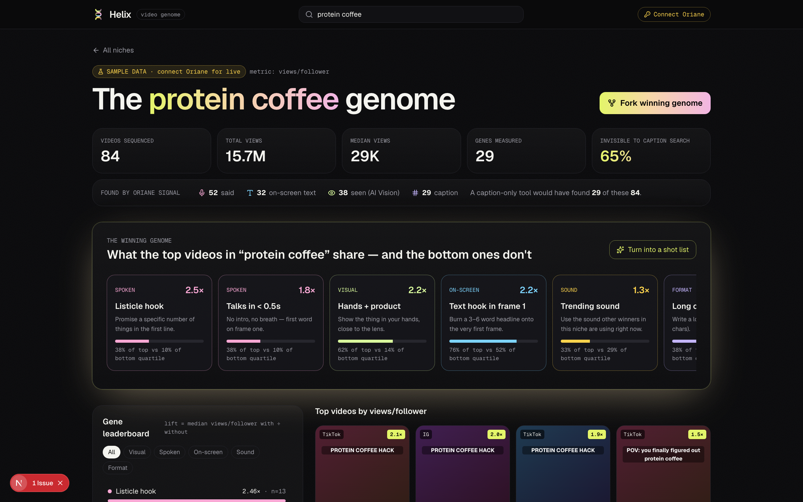
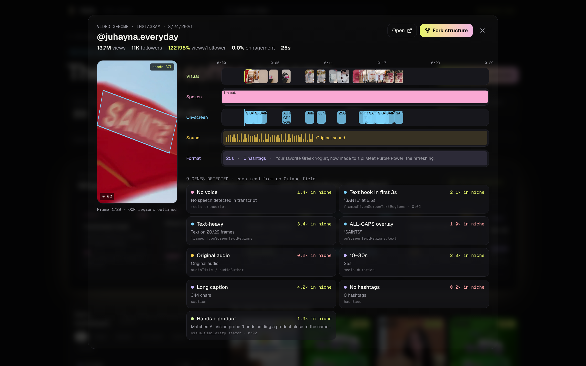
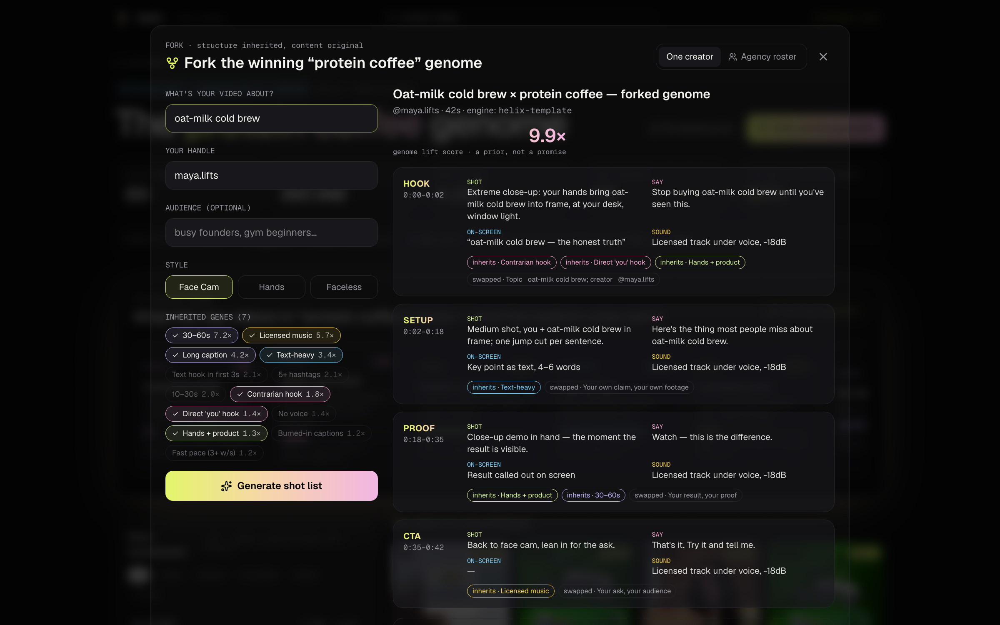

Every viral video
has a genome.
Post, pray, and copy whatever blew up last week.
Fifty briefs every Monday, written on gut feel.
Read captions and hashtags. Blind to what a video shows, says, overlays and sounds like.
of brand exposure lives in what creators say and show — not in what they tag.
Three named Oriane sub-queries, OR-ed. Every video knows how it was found.
Median views-per-follower with the gene ÷ without, plus top- vs bottom-quartile share.
Structure inherited, content original. A shot list you can film on Monday.

Five tracks on one timeline. Every gene ships with its receipt.
frames[].onScreenTextRegions @0:02 · “SANTE” · 2.1× in nicheAI-Vision probe @0:02 · 1.3× in nichecaption · 344 chars · 4.2× in niche

said onscreen caption
OR-ed. Top by views + most recent, projection=full.
Restricted to corpus IDs: face-to-camera, hands + product, screen rec, outdoors, text card, before / after.
Every gene keeps its source field + timestamp: transcriptChunks, onScreenTextRegions, audioTitle…
Median views / follower with ÷ without, plus top- vs bottom-quartile share.
4-beat shot list from the template; optional LLM polish of the spoken lines.
framer-motion views; live sequences file-cached so the demo survives bad wifi.
Sequence your niche, fork your next video.
Batch-forked Monday briefs for the whole roster.
Metered on top of Oriane credits.
Like songs share chord progressions.
github.com/vnmoorthy/helixThank you. Questions welcome.
“Isn't forking copying?”
We copy structure, never content, the way songs share chord progressions.
“Do genes cause views?”
We don't claim causation: lift with n, quartile share and timestamped receipts. Every fork is a testable hypothesis.